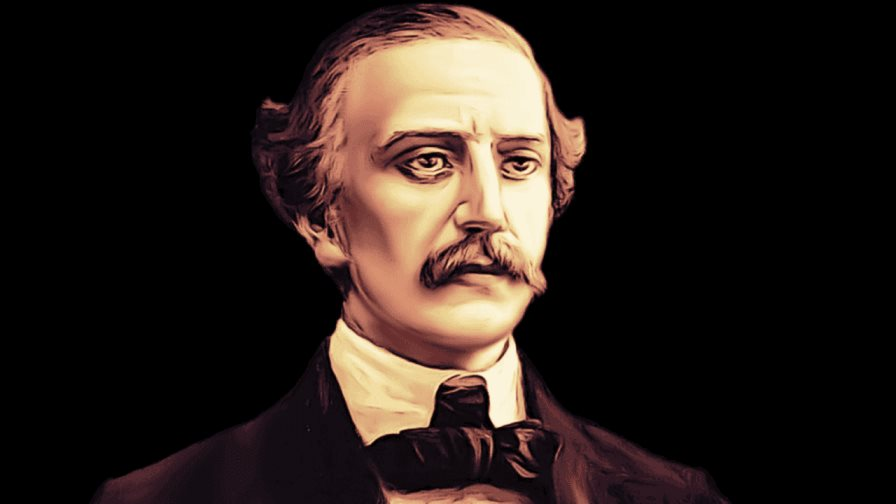
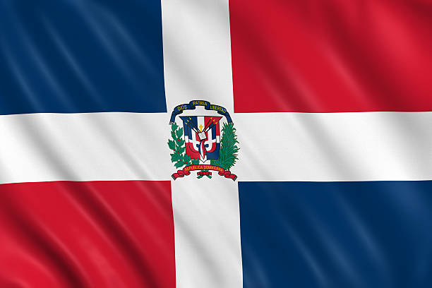
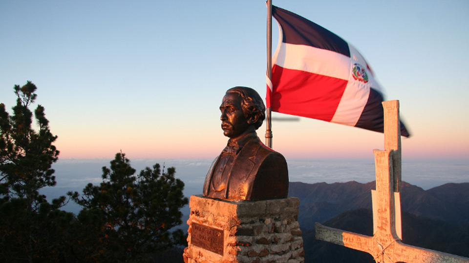
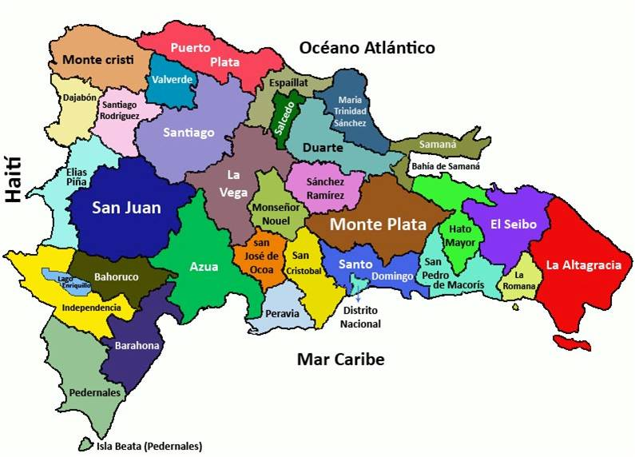

Galería Educativa

Retrato de Juan Pablo Duarte

La Bandera Dominicana

Estatua del Patricio

Mapa de la Isla

Tumba de Duarte
Altar de la Patria
"Padre de la Patria y Fundador de la República Dominicana"
"Vivir sin patria es lo mismo que vivir sin honor."
Nace el 26 de enero de 1813. Hijo de Juan José Duarte, comerciante español, y Manuela Díez Jiménez, oriunda de El Seibo. Su hogar fue un ejemplo de valores morales y patriotismo en una época de gran inestabilidad política.
A los 15 años viaja a Nueva York, Inglaterra, Francia y España. Al ser preguntado por el capitán del barco sobre su origen, sintió vergüenza de no tener una patria libre. Este sentimiento encendió su llama revolucionaria.
Duarte no solo fue un guerrero, fue un educador. Creó un movimiento cultural que utilizaba el teatro para despertar la conciencia del pueblo. Para él, **"La nación dominicana es la reunión de todos los dominicanos libres"**.
El 16 de julio de 1838, en casa de Doña Chepita Pérez, nació el motor de la libertad.
Se juramentaron con sangre bajo la protección de Dios para separar la parte este de la isla de la ocupación haitiana.
Duarte, Juan Isidro Pérez, Pedro Alejandro Pina, Félix María Ruiz, Benito González, Juan Nepomuceno Ravelo, entre otros.
Duarte diseñó la bandera: Azul (libertad), Rojo (sangre de los héroes) y Blanco (paz y unión).
Letra de Ramón Emilio Jiménez y música de José de Jesús Ravelo.
"Nuestra Patria ha de ser libre e independiente de toda potencia extranjera o se hunde la isla."
— Sobre la Soberanía
"Sed justos lo primero, si queréis ser felices; ese es el primer deber del hombre."
— Sobre la Ética
"Toda ley no establecida por el pueblo es nula; la ley es la voluntad de la nación."
— Sobre la Democracia
"El Gobierno debe mostrarse justo y enérgico... o no habrá libertad."
— Sobre el Orden
"Los blancos, morenos, cobrizos, unidos y osados, la patria salvemos de viles tiranos."
— Sobre la Unidad Nacional
"La política no es especulación; es la ciencia más pura después de la Filosofía."
— Sobre la Nobleza Política

Retrato de Juan Pablo Duarte

La Bandera Dominicana

Estatua del Patricio

Mapa de la Isla
Tumba de Duarte
Altar de la Patria
Se funda la base ideológica de la República Dominicana.
Se dispara el trabucazo en la Puerta del Conde. ¡Nace la Nación!
Duarte muere el 15 de julio, pero su legado vive en cada dominicano.